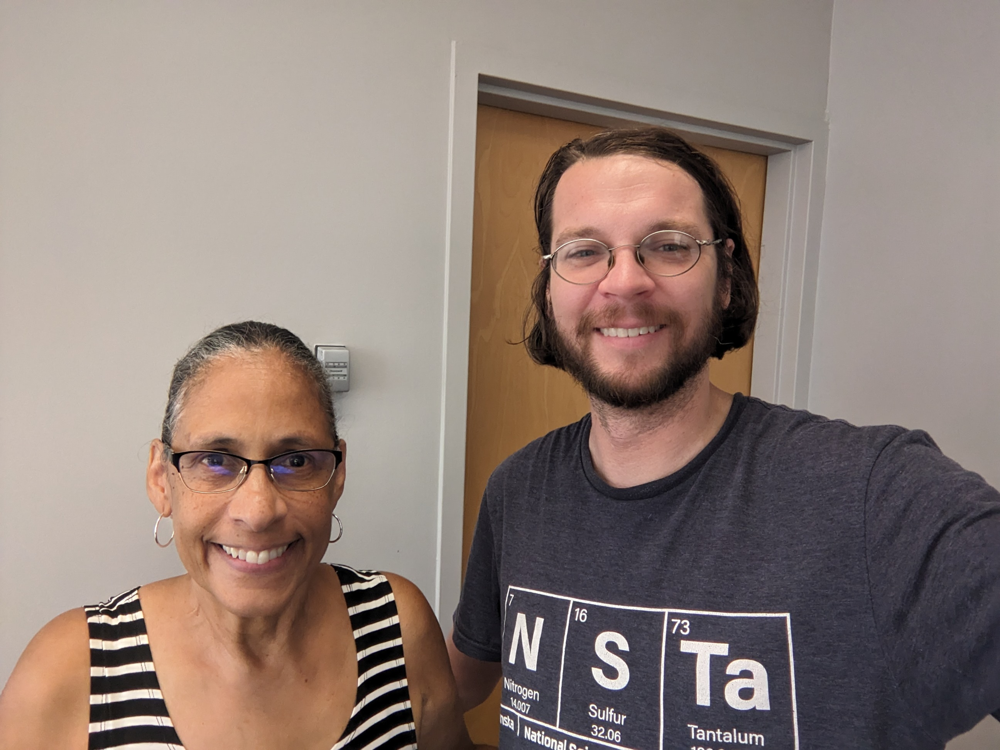
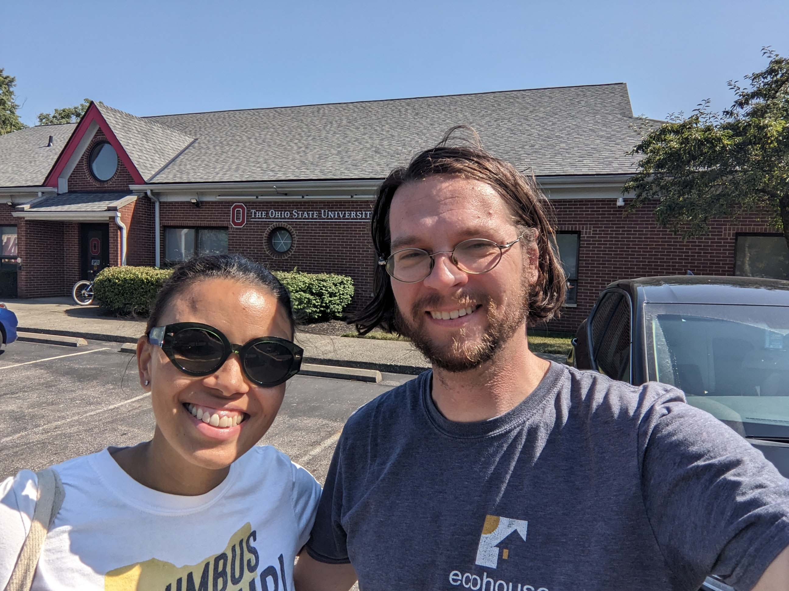

I am so so proud to receive the Canary Candidate endorsement from Ohio Senator Sherrod Brown! Please vote for Sherrod Brown on or before November 5!!!! He fights for us! It is our turn to fight for him!
I am an educator and I am very proud to be endorsed by the Ohio Education Association
I am an educator and I am very proud to be endorsed by the Ohio Federation of Teachers
I am a professor at Ohio State University and I am proud to be endorsed by the Ohio Conference of the American Association of University Professors
I am a scientist and I am very proud to be endorsed by 3.14 Action which is an organization that provides support to scientists running for public office

I've enjoyed meeting with the New Albany Democrats! I am grateful for their endorsement!

Antoinette Miranda (outgoing state board of education member representing District 6)

Morgan Harper, former candidate for US Senate in the democratic primary, founder of the non-profit Columbus Stand Up which advocates for Climate Justice and predatory utility practices
Michelle Newman, State Board of Education Member representing District 8

Kristie Reighard, former chemistry teacher, former principal, former president of Science Education Council of Ohio, OEA endorsed candidate for State Board of Education District 1
Rev. Dr. Susan Smith, Columbus pastor
Dr. Steve Lewis, Teacher and Director of the Center for Mathematical Reasoning at Columbus School for Girls in Bexley, Ohio
Jesse Schroeder, School Social Worker, South Western City Schools
Jason Adams, President Emeritus, Muskingum County Young Democrats
Prof. Andrew Heckler, Professor and Physics Education Researcher, Ohio State University, Department of Physics
Prof. Geraldine Cochran, Professor and Physics Education Researcher, Ohio State University, Department of Physics
Prof. Jim Fowler, Associate Professor, Ohio State University, Department of Mathematics
Prof. Jeff McKee, Professor, Ohio State University, Department of Anthropology, Department of Evolution, Ecology and Organismal Biology
Anthony Alston, former principal and current Director of External Affairs at Metro Schools, resident of District 6
Shanti Coaston, Computer Science Teacher, 2024 Ohio State Board of Education District 11 Teacher of the year, CSTA Equity Fellow
Julia Armstrong, Managing Director, Institute for Cybersecurity and Digital Trust, Ohio State University
Prof. Monique Ross, professor and director of the Center for Computing Education at Ohio State University
Bridget Tharp, Foster mom, non-profit fundraising professional, Columbus Future 50 honoree (class of 2021)
Prof. Enam Chowdhury, Professor, Ohio State University, Department of Materials Science
Mom's Demand Action Gun Sense Candidate